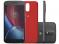
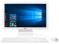

Tablet DL Play Kids 8GB 7" Wi-Fi Android 5.1 - Proc. Intel Quad Core Câmera Frontal
Postado em 12 de Dezembro 2016Tablet DL Play Kids 8GB 7" Wi-Fi Android 5.1 - Proc. Intel Quad Core Câmera Frontal Tablet Play Kids da DL. Este tablet possui um design premium e utiliza processador de última geração Quad-Core que permite um desempenho elevado do produto e ao mesmo tempo proporciona uma experiência de uso agradável. Acompanha uma exclusiva capa de borracha laranja que traz segurança maior para o uso. Tem memória de armazenamento interna de 8 GB e acesso à internet sem fio mais rápido do mercado padrão IEEE802.11/b/g/n. Conta com exclusivos aplicativos infantis da DL que ajudam na alfabetização e interação da criança com o tablet. Tudo isso e mais uma infinidade de funções disponíveis através de mais de 1 milhão de jogos e aplicativos para download através do Google Play (Play Store).
Postado por Esterlina genySmartphone Motorola Moto G 4ª Geração Plus 32GB - Preto Dual Chip 4G Câm. 16 + Selfie 5MP Tela 5.5"
Postado em 12 de Dezembro 2016
Smartphone Motorola Moto G 4ª Geração Plus 32GB - Preto Dual Chip 4G Câm. 16 + Selfie 5MP Tela 5.5" Moto G4 Plus da Motorola. A família Moto G aumentou e a 4ª geração chegou com tudo aliando tecnologia, ótimas experiências e grandes novidades. Este modelo tem tela Touch Screen Full HD de 5,5” com proteção contra arranhões, além de processador octa-core com 2 GB de memória RAM que proporciona excelente desempenho na hora de executar seus apps favoritos. Outra vantagem são os avançados recursos gráficos que reproduzem imagens 3D e permitem o uso de vários apps simultaneamente, tudo isso sem perder velocidade. Uma das maiores novidades deste modelo é o sensor de impressão digital. Basta tocar no sensor que ele ativa e desbloqueia seu Smartphone ao mesmo tempo. E graças ao seu sistema operacional, você também pode utilizar o sensor para ter um acesso mais fácil e seguro a outras aplicações compatíveis com essa tecnologia. Ah, sem contar que o Android 6.0 Marshmallow vem puro (versão sem modificação). Se você gosta de tirar boas fotos, com certeza vai amar a câmera instantânea de 16 MP com tecnologia avançada e muito fácil de usar. Ela tem duas tecnologias de foco. O foco laser detecta todos os detalhes, mesmo em ambientes pouco iluminados e o foco por detecção de fase (PDAF) compara rapidamente mais de 200 mil pixels garantindo imagens mais nítidas. Em conjunto, eles proporcionam fotos lindas em qualquer iluminação. A época de fotos borradas ficou no passado. Já com a câmera frontal de 5 MP e lente de ângulo aberto de 85º, fica mais fácil colocar todos os amigos em uma mesma foto, deixando as selfies e fotos em grupo incríveis. Totalmente preparado para a internet em ambientes Wi-Fi, ele também tem conexão com velocidade 4G. É o que há de mais moderno para uma navegação rápida e segura. Além disso, a bateria também evoluiu. A 4ª Geração agora possui 3000 mAh e o carregador que acompanha o modelo é o TurboPower, exclusivo da marca, para você conseguir horas de uso com apenas alguns minutos de carga. Com o novo design, ele ficou mais fino, com bordas arredondadas e acabamento com microtextura deixando o manuseio mais confortável. Aproveite para conferir todas as características e comprove o excelente custo benefício do Moto G 4ª Geração!
Postado por Esterlina genyComputador All in One LG 22V240 Intel Quad Core - 4GB 500GB LCD 21,5" Windows 10
Postado em 12 de Dezembro 2016
Computador All in One LG 22V240 Intel Quad Core - 4GB 500GB LCD 21,5" Windows 10 O novo All In One 22V240 é moderno com estilo minimalista, fácil de configurar e oferece a você desempenho imediato com eficiência de energia. O monitor é Full HD e tem tecnologia IPS, que proporciona imagens perfeitas.
Postado por Esterlina geny